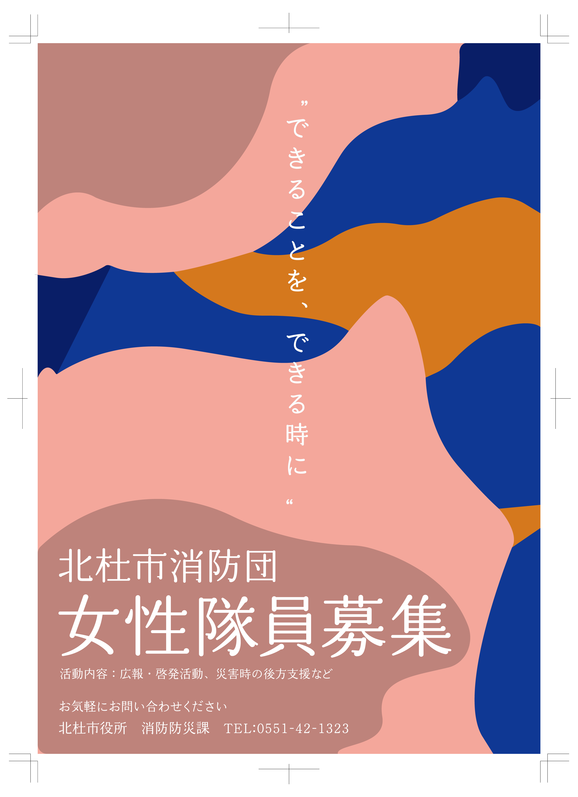
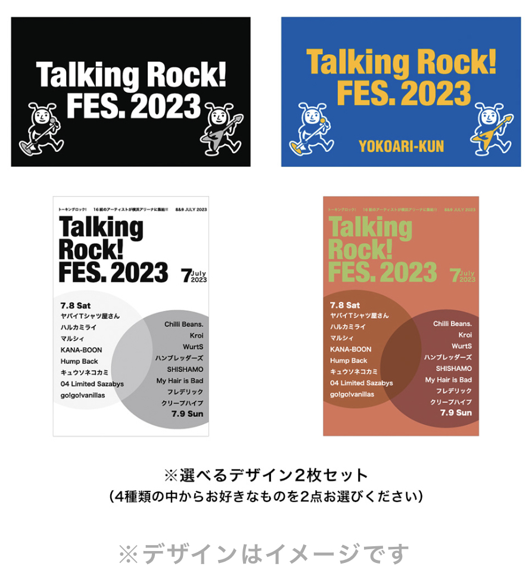

ABOUT
”自分らしい”演劇ポスター
Created in 2022


「自分らしさ」をテーマに架空の演劇のポスターを制作。
何周にもかけて”自分らしさ”を追求して、様々なポスターを参考にするなど情報収集に力を入れた。
文字の配列やレイアウトを意識しておさまりがよくインパクトのある印象になるようにした。

ABOUT
北杜消防団女性隊員募集ポスター
Created in 2023
北杜市の消防団の女性隊員を募集するポスターを依頼により作成。
デザインはお任せだったため女性らしさを表す曲線をメインに消防団の隊服の色を使って人っぽく図形で配置。
フォントは柔らかくも存在感のあるものにしてはっきりと伝わるように。
Goods
Design
my portfolios

ABOUT
音楽フェスのステッカーデザイン
Created in 2023
音楽雑誌会社のインターン先で開かれた音楽フェスのオフィシャルグッズである「雑誌風ステッカー」のデザインを担当。
雑誌のデザインをそのまま活かし、色合いなどに意識して制作し実際に会場で販売をした。